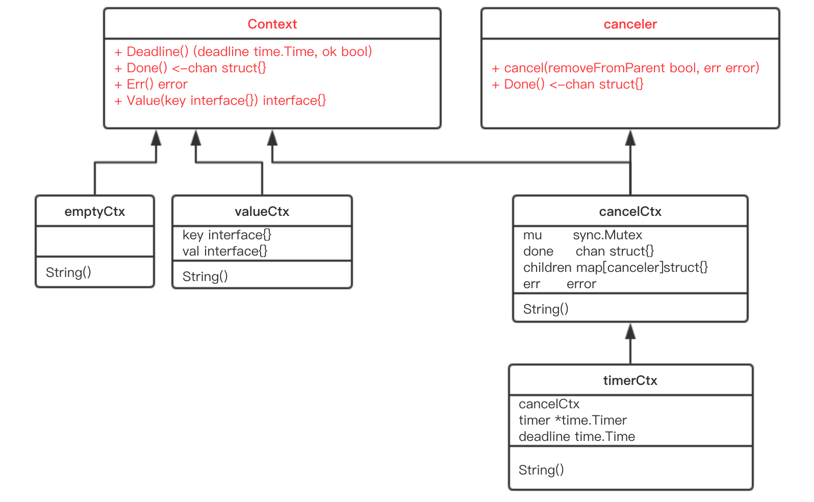
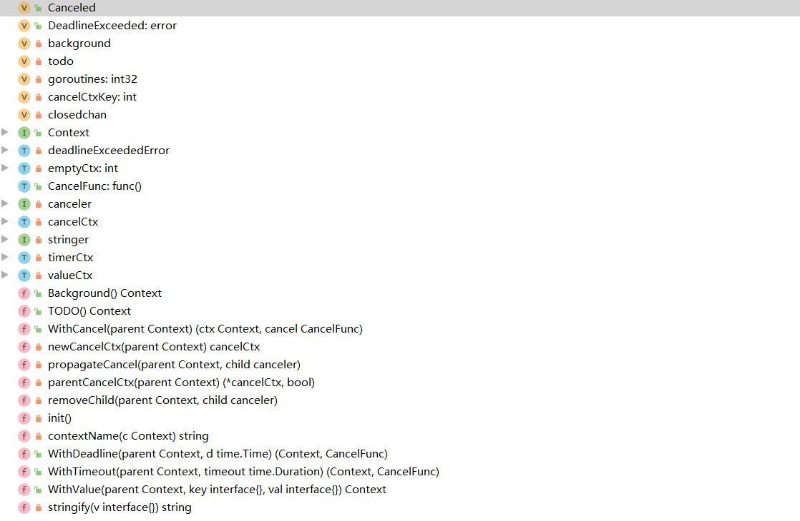
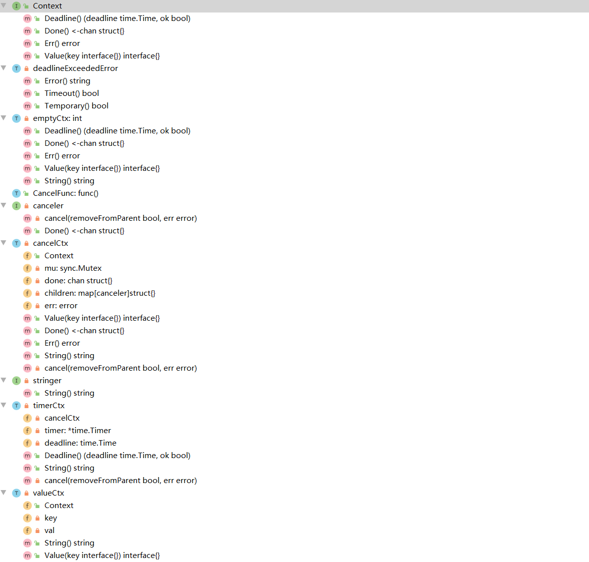

context出现在各种组件之中，作为上下文传递数据、控制程序运行。在实际代码coding中，也是经常用到。
1 2 3 4 5 6 7 8 9 10 11 12 13 14 15 16 17 18 19 func main () ctx, cancel := context.WithCancel(context.Background()) go func (ctx context.Context) for { select { case <-ctx.Done(): fmt.Println("exit..." ) default : fmt.Println("running..." ) time.Sleep(2 * time.Second) } } }(ctx) time.Sleep(6 * time.Second) cancel() time.Sleep(3 * time.Second) }
context拥有三个特性：终止时间、可以被取消的信号值，拥有跨函数的值。凡是context必然拥有这些基本功能函数（未必会实现具体功能，后面会说到）。
本质 context接口：
1 2 3 4 5 6 7 type Context interface { Deadline() (deadline time.Time, ok bool ) Done() <-chan struct {} Err() error Value(key interface {}) interface {} }
canceler接口：
1 2 3 4 type canceler interface { cancel(removeFromParent bool , err error) Done() <-chan struct {} }
由于duck typing，Go的接口是实现类似继承的方法。
Context接口，串联起了Cancel、Deadline、Timeout、Value，四种ctx，同时canceler接口又统一了Cancel、Deadline、Timeout三种cancel的行为。（Deadline、Timeout这俩其实是一种）
继承关系：

代码结构：

具体实现：

简单描述 TODO()和Background()本质没有区别。都是emptyCtx，没有任何意义，除非使用其他ctx进行转化（接口的妙用）。
1 2 3 4 5 6 7 8 9 10 11 12 13 14 15 16 17 18 19 20 21 22 23 24 25 26 27 28 29 30 31 32 type emptyCtx int func (*emptyCtx) Deadline () (deadline time.Time, ok bool ) return } func (*emptyCtx) Done () <-chan struct return nil } func (*emptyCtx) Err () error return nil } func (*emptyCtx) Value (key interface {}) interface return nil } func (e *emptyCtx) String () string switch e { case background: return "context.Background" case todo: return "context.TODO" } return "unknown empty Context" } var ( background = new (emptyCtx) todo = new (emptyCtx) )
cancelCtx，其实现了canceler接口，还直接将Context接口作为其的字段，这样可被看作直接实现了Context接口。WithCancel直接传入一个emptyCtx给Context。
cancelCtx覆写Done、Err、Value这三个方法，Deadline则依然是emptyCtx方法。
1 2 3 4 5 6 7 8 9 10 11 12 13 14 15 16 17 18 19 func WithCancel (parent Context) (ctx Context, cancel CancelFunc) c := newCancelCtx(parent) propagateCancel(parent, &c) return &c, func () true , Canceled) } } func newCancelCtx (parent Context) cancelCtx return cancelCtx{Context: parent} } type cancelCtx struct { Context mu sync.Mutex done chan struct {} children map [canceler]struct {} err error }
更详细的讲解，对于cancel的树状实现：深度解密Go语言之context
一个小点 创建一个关闭了channel。
1 2 3 4 5 6 var closedchan = make (chan struct {})func init () close (closedchan) }
c.done 是“懒汉式”创建，只有调用了 Done() 方法的时候才会被创建。
cancel的done在没有创建属于自己的channel时调用cancel，都会被这个值赋值。
1 2 3 4 5 6 7 8 9 func (c *cancelCtx) Done () <-chan struct c.mu.Lock() if c.done == nil { c.done = make (chan struct {}) } d := c.done c.mu.Unlock() return d }
另外：context value不建议替代程序的输入和输出参数，不通过ctx带入带出，而是让让他们自己作为出参入参。否则，对于参数的set和get将极难理清。
本文标题： Go context源码学习
文章作者： 小师
发布时间： 2020-05-22
最后更新： 2022-05-04
原始链接： chunlife.top/2020/05/22/Go-context源码学习/
版权声明： 本站所有文章均采用知识共享署名4.0国际许可协议进行许可